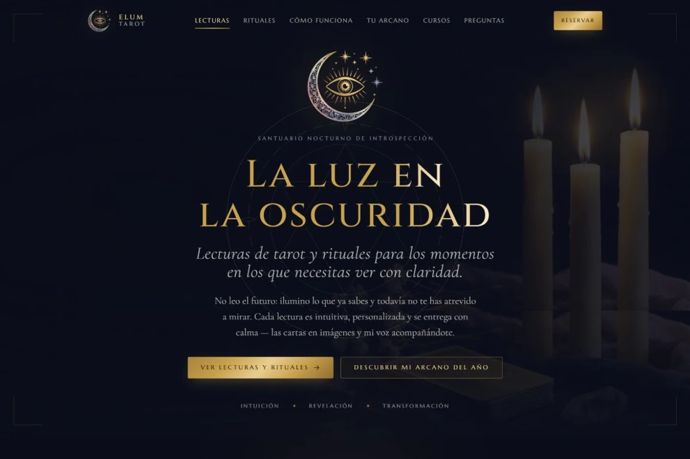
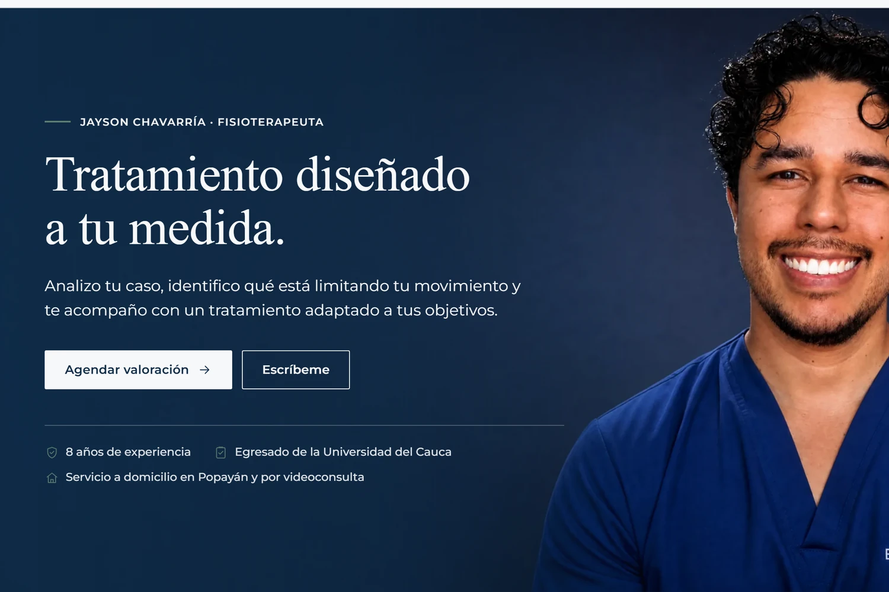
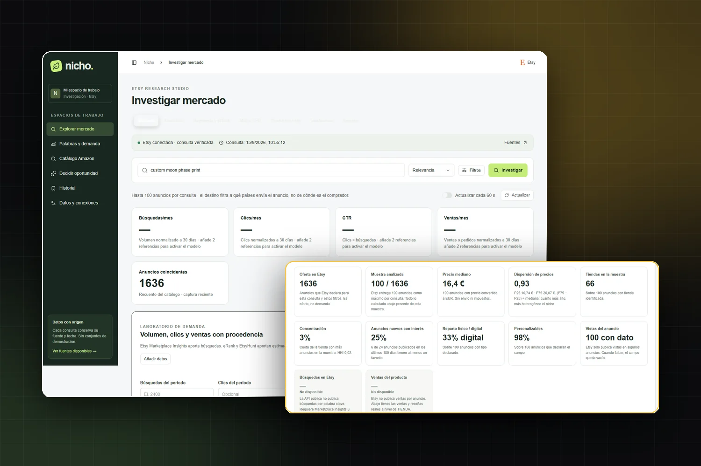
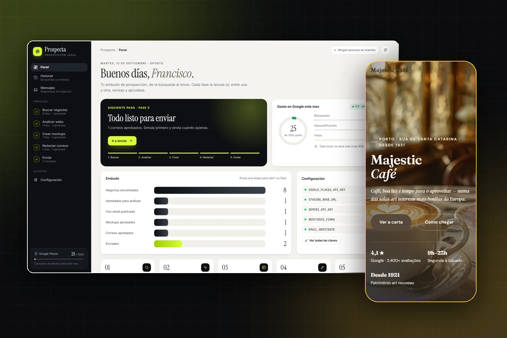
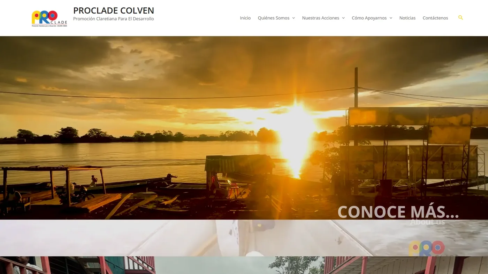

Caso destacado

Oporto, Portugal · Disponible para proyectos
Visual & Web Designer Producto digital · UX/UI · IA aplicada
Diseñador visual y web con más de 8 años de experiencia. Llevo un proyecto desde el concepto y el sistema visual hasta la interfaz, la implementación y la documentación: identidad, UX/UI, desarrollo en WordPress y herramientas a medida con IA aplicada.
01 — Sobre mí
Soy Francisco Sarria, diseñador visual y web colombiano radicado en Oporto, Portugal. Empecé en identidad de marca e impresos y hoy trabajo donde el diseño se cruza con el producto digital: diseño la marca, diseño la interfaz, la construyo y la documento. Sitios en WordPress, sistemas de contenido y herramientas personalizadas que automatizan tareas, generan propuestas y ayudan a investigar oportunidades.
Me interesa lo que se puede comprobar. Al reorganizar la gestión de contenidos de una ONGD, el equipo pasó a publicar noticias y proyectos sin ayuda técnica, y la relación sigue activa tres años después. Al lanzar un canal de YouTube desde cero, superó los 3,6 millones de reproducciones y hoy está monetizado. Trabajo siempre igual: entiendo el objetivo, diseño para ese objetivo y reviso los resultados.
Me muevo con soltura entre la dirección de arte y la ejecución técnica, así que puedo llevar un proyecto del concepto a la entrega sin intermediarios.
02 — Experiencia
Proyectos digitales propios y de clientes · YouTube, Instagram, WhatsApp
ONGD Proclade Colven · Medellín, Colombia
Proyectos independientes · Sectores diversos
03 — Proyectos





04 — Habilidades
05 — Contacto
Respondo a propuestas de proyecto, colaboraciones y ofertas de trabajo. Escríbeme por correo o por WhatsApp y te contesto con una primera idea de alcance y plazos.